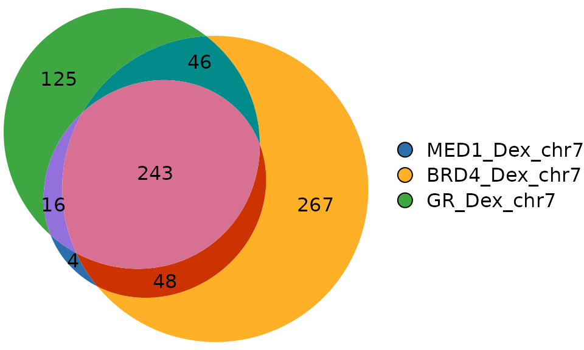
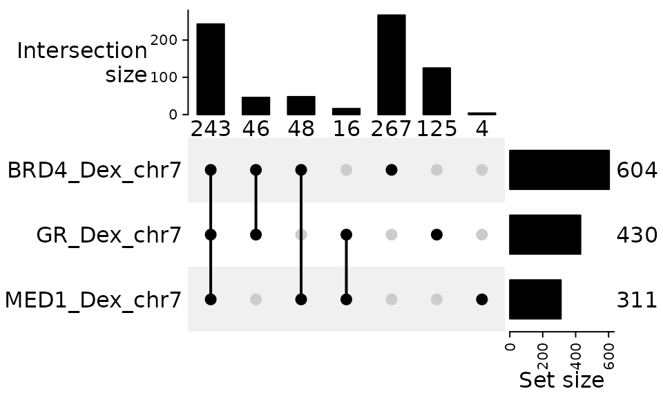

gVenn: Proportional Venn diagrams for genomic regions and gene set overlaps
Christophe Tav
August 2025
Source:vignettes/gVenn.Rmd
gVenn.Rmd
Introduction
gVenn stands for gene/genomic
Venn.
It provides tools to compute overlaps between genomic regions or sets of
genes and visualize them as Venn diagrams with areas
proportional to the number of overlapping elements. In addition, the
package can generate UpSet plots for cases with many
sets, offering a clear alternative to complex Venn diagrams.
With seamless support for GRanges and
GRangesList objects, gVenn integrates
naturally into Bioconductor workflows such as ChIP-seq, ATAC-seq, or
other interval-based analyses.
Overlap groups can be easily extracted for further analysis, such as motif enrichment, transcription factor binding enrichment, or gene annotation. gVenn package produces clean, publication-ready figures.

Example workflow
This section demonstrates a typical workflow with gVenn, from computing overlaps to generating clean, publication-ready figures. The examples show how to work with genomic interval data.
We start by loading the package:
1. Load example ChIP-seq genomic regions
We use the dataset
a549_chipseq_dataset, which contains
example consensus peak subsets for MED1,
BRD4, and GR after dexamethasone
treatment in A549 cells. To keep the dataset small and suitable for
examples and tests, each set has been restricted to peaks located on
chromosome 7.
These data originate from Tav et al. (2023) doi:10.3389/fgene.2023.1237092.
# Load the example A549 ChIP-seq peaks (subset on chr7 for demo)
data(a549_chipseq_peaks)2. Compute overlaps between genomic regions
We compute overlaps between the ChIP-seq peak sets using
computeOverlaps():
genomic_overlaps <- computeOverlaps(a549_chipseq_peaks)The result is a structured object that contains
- A GRanges object, where each region includes metadata describing its overlap pattern across the input sets.
- An associated count matrix (or data frame) summarizing the number of regions in each intersection.
3. Visualization
Venn diagram
plotVenn() draws proportional Venn diagrams from the
overlap object.
plotVenn(genomic_overlaps)
UpSet plot
For more than three sets, a Venn diagram with
areas exactly proportional to all intersections is
generally not mathematically attainable. Solvers (like
those used by eulerr) provide best-effort
approximations, but the layout can become hard to read. In
these cases, an UpSet plot is the recommended
visualization because it scales cleanly to many sets and preserves
intersection sizes precisely on bar axes.
We therefore suggest using plotUpSet() when you have
> 3 sets (or any time the Venn becomes visually
crowded).
plotUpSet(genomic_overlaps)
Export visualization
You can export any visualization using saveViz():
venn <- plotVenn(genomic_overlaps)
saveViz(venn,
output_dir = ".",
output_file = "figure_gVenn",
format = "pdf")By default, files are written to the current directory (“.”). If you enabled the date option (today), the current date will be prepended to the filename.
You can also export to PNG or SVG:
4. Extract elements per overlap group
groups <- extractOverlaps(genomic_overlaps)
# Display the number of genomic regions per overlap group
sapply(groups, length)
#> group_010 group_001 group_100 group_110 group_011 group_101 group_111
#> 267 125 4 48 46 16 243Overlap group naming
When overlaps are computed, each group of elements or genomic regions is labeled with a binary code that indicates which sets the element belongs to.
- Each digit in the code corresponds to one input set (e.g., A, B, C).
- A 1 means the element is present in that set, while 0 means absent.
- The group names in the output are prefixed with “group_” for clarity.
| Group name | Meaning |
|---|---|
group_100 |
Elements only in A |
group_010 |
Elements only in B |
group_001 |
Elements only in C |
group_110 |
Elements in A ∩ B (not C) |
group_101 |
Elements in A ∩ C (not B) |
group_011 |
Elements in B ∩ C (not A) |
group_111 |
Elements in A ∩ B ∩ C |
Extract one particular group
Each overlap group can be accessed directly by name for downstream analyses, including motif enrichment, transcription factor (TF) enrichment, annotation of peaks to nearby genes, functional enrichment or visualization.
For example, to extract all elements that are present in A ∩ B ∩ C:
# Extract elements in group_111 (present in A, B, and C)
peaks_in_all_sets <- groups[["group_111"]]
# Display the elements
peaks_in_all_sets
#> GRanges object with 243 ranges and 1 metadata column:
#> seqnames ranges strand | intersect_category
#> <Rle> <IRanges> <Rle> | <character>
#> [1] chr7 1156721-1157555 * | 111
#> [2] chr7 1520256-1521263 * | 111
#> [3] chr7 2309811-2310529 * | 111
#> [4] chr7 3027924-3028466 * | 111
#> [5] chr7 3436651-3437214 * | 111
#> ... ... ... ... . ...
#> [239] chr7 158431413-158433728 * | 111
#> [240] chr7 158818200-158819318 * | 111
#> [241] chr7 158821076-158821876 * | 111
#> [242] chr7 158863108-158864616 * | 111
#> [243] chr7 159015311-159016245 * | 111
#> -------
#> seqinfo: 24 sequences from an unspecified genome; no seqlengthsExporting overlap groups
Each overlap group (e.g., group_100,
group_110, group_111) can be exported for
downstream analysis. The function exportOverlaps() writes
each group to a Excel file, which makes it easy to reuse the results
outside of R.
# export overlpas
exportOverlaps(genomic_overlaps,
output_dir = ".",
output_file = "overlap_groups")Session info
sessionInfo()
#> R version 4.5.1 (2025-06-13)
#> Platform: x86_64-pc-linux-gnu
#> Running under: Ubuntu 24.04.3 LTS
#>
#> Matrix products: default
#> BLAS: /usr/lib/x86_64-linux-gnu/openblas-pthread/libblas.so.3
#> LAPACK: /usr/lib/x86_64-linux-gnu/openblas-pthread/libopenblasp-r0.3.26.so; LAPACK version 3.12.0
#>
#> locale:
#> [1] LC_CTYPE=C.UTF-8 LC_NUMERIC=C LC_TIME=C.UTF-8
#> [4] LC_COLLATE=C.UTF-8 LC_MONETARY=C.UTF-8 LC_MESSAGES=C.UTF-8
#> [7] LC_PAPER=C.UTF-8 LC_NAME=C LC_ADDRESS=C
#> [10] LC_TELEPHONE=C LC_MEASUREMENT=C.UTF-8 LC_IDENTIFICATION=C
#>
#> time zone: UTC
#> tzcode source: system (glibc)
#>
#> attached base packages:
#> [1] stats4 stats graphics grDevices utils datasets methods
#> [8] base
#>
#> other attached packages:
#> [1] gVenn_0.99.1 GenomicRanges_1.60.0 GenomeInfoDb_1.44.3
#> [4] IRanges_2.42.0 S4Vectors_0.46.0 BiocGenerics_0.54.0
#> [7] generics_0.1.4
#>
#> loaded via a namespace (and not attached):
#> [1] eulerr_7.0.4 sass_0.4.10 shape_1.4.6.1
#> [4] polylabelr_0.3.0 stringi_1.8.7 magrittr_2.0.4
#> [7] digest_0.6.37 evaluate_1.0.5 grid_4.5.1
#> [10] timechange_0.3.0 RColorBrewer_1.1-3 iterators_1.0.14
#> [13] circlize_0.4.16 fastmap_1.2.0 foreach_1.5.2
#> [16] doParallel_1.0.17 jsonlite_2.0.0 GlobalOptions_0.1.2
#> [19] httr_1.4.7 ComplexHeatmap_2.24.1 UCSC.utils_1.4.0
#> [22] codetools_0.2-20 textshaping_1.0.3 jquerylib_0.1.4
#> [25] cli_3.6.5 rlang_1.1.6 crayon_1.5.3
#> [28] polyclip_1.10-7 XVector_0.48.0 cachem_1.1.0
#> [31] yaml_2.3.10 tools_4.5.1 parallel_4.5.1
#> [34] colorspace_2.1-2 GenomeInfoDbData_1.2.14 GetoptLong_1.0.5
#> [37] vctrs_0.6.5 R6_2.6.1 png_0.1-8
#> [40] matrixStats_1.5.0 lifecycle_1.0.4 lubridate_1.9.4
#> [43] stringr_1.5.2 fs_1.6.6 clue_0.3-66
#> [46] cluster_2.1.8.1 ragg_1.5.0 desc_1.4.3
#> [49] pkgdown_2.1.3 bslib_0.9.0 glue_1.8.0
#> [52] Rcpp_1.1.0 systemfonts_1.3.1 xfun_0.53
#> [55] knitr_1.50 rjson_0.2.23 htmltools_0.5.8.1
#> [58] rmarkdown_2.30 compiler_4.5.1References
Example A549 ChIP-seq dataset
- Tav, C., Fournier, É., Fournier, M., Khadangi, F., Baguette, A., Côté, M.C., Silveira, M.A.D., Bérubé-Simard, F.-A., Bourque, G., Droit, A., & Bilodeau, S. (2023). Glucocorticoid stimulation induces regionalized gene responses within topologically associating domains. Frontiers in Genetics, 14, 1237092. doi:10.3389/fgene.2023.1237092
Supporting packages
eulerr : Larsson, J. (2023). eulerr: Area-Proportional Euler and Venn Diagrams with Ellipses. CRAN package page
ComplexHeatmap : Gu, Z., Eils, R., & Schlesner, M. (2016). Complex heatmaps reveal patterns and correlations in multidimensional genomic data. Bioinformatics, 32(18), 2847–2849. doi:10.1093/bioinformatics/btw313